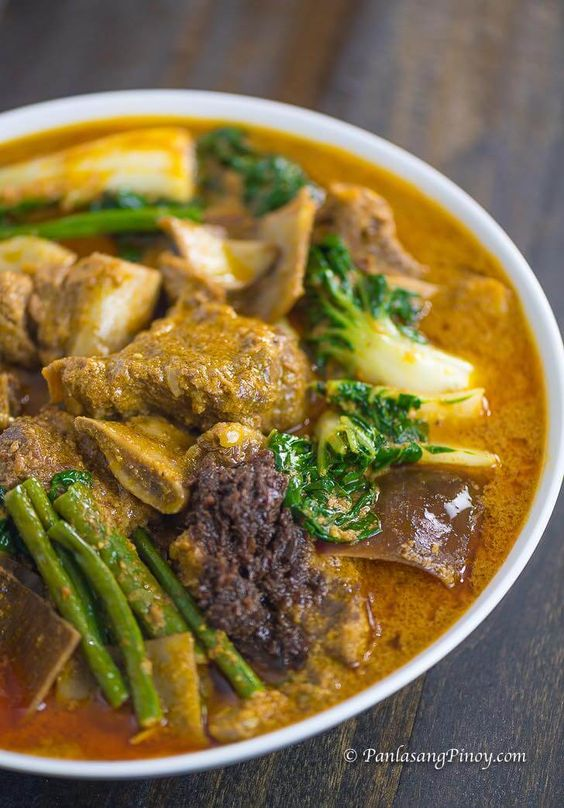

Kare-Kare

Description
Kare Kare is a traditional Filipino stew complimented with a thick savory peanut sauce.
The commonly used meats for this dish are ox tail, tripe, and pork leg; on some occasions
goat and chicken meat are also used. Besides the peanuts, this dish depends on the shrimp
paste (on the side) in order to be fully enjoyed. Traditionally, “palayok” (clay cooking pot)
is used to cook this dish and it is also used as the serving pot.
Ingredients
- 3 lbs oxtail cut in 2 inch slices you an also use tripe or beef slices
- 1 piece small banana flower bud sliced
- 1 bundle pechay or bok choy
- 1 bundle string beans cut into 2 inch slices
- 4 pieces eggplants sliced
- 1 cup ground peanuts
- 1/2 cup peanut butter
- 1/2 cup shrimp paste
- 34 Ounces water about 1 Liter
- 1/2 cup annatto seeds soaked in a cup of water
- 1/2 cup toasted ground rice
- 1 tbsp garlic minced
- 1 piece onion chopped
- salt and pepper
Instructions
- In a large pot, bring the water to a boil
- Put in the oxtail followed by the onions and simmer for 2.5 to 3 hrs or until tender (35 minutes if using a pressure cooker)
- Once the meat is tender, add the ground peanuts, peanut butter, and coloring (water from the annatto seed mixture) and simmer for 5 to 7 minutes
- Add the toasted ground rice and simmer for 5 minutes
- On a separate pan, saute the garlic then add the banana flower, eggplant, and string beans and cook for 5 minutes
- Transfer the cooked vegetables to the large pot (where the rest of the ingredients are)
- Add salt and pepper to taste
- Serve hot with shrimp paste. Enjoy!
Back to Main Page